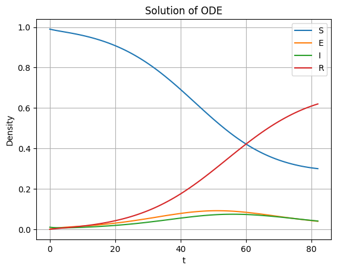

Getting Started with simcronomicon
Welcome to simcronomicon! This guide will help you get started with the main features of the package, including building a town, defining disease spread models, running simulations, and visualizing results.
We will use the simplest and most common infection model in disease modeling throughout this tutorial, the SEIR model!
If you have no knowledge on disease modeling, we recommend you to visit the tutorial in examples/basic_disease_spread.ipynb so that you might have a better grasp of how epidemic agent-based modelling looks like in action.
Installation
We recommend using conda to install simcronomicon and its dependencies:
# Clone the repository (if you haven't already)
git clone https://github.com/warisa-r/simcronomicon.git
cd simcronomicon
# Create and activate the conda environment
conda env create -f environment.yml
conda activate simcronomicon-env
pip install .
# Verify the installation
python -c "import simcronomicon; print(simcronomicon.__version__)"
Basic Workflow
Create or load a town network
Define step events and a infection model
Run a simulation
Visualize the results
Building or Loading a Town
First step of running the simulation of agent-based network modeling is generating a network from a given geographic point you want to simulate your spread on.
You can simply call the function from_point from the module Town to generate the appropriate input files.
When a Town object is generated, a network of buildings is created with each node carrying the x and y coordinate of the building centroids in your interested location connected with each other with edges that represent shortest path distances from each other. Furthermore, each node that represent each location in town is also classfied to different types of buildings with the building tags in OpenStreetMap data.
Create from a geographic point:
from simcronomicon import Simulation, Town, TownParameters
from simcronomicon.infection_models import (
SEIRModel, SEIRModelParameters, FolkSEIR,
StepEvent, EventType,
)
from simcronomicon.visualization import (
plot_status_summary_from_hdf5,
plot_place_types_scatter,
plot_agents_scatter
)
from simcronomicon.infection_models import (
log_normal_mobility,
)
town = Town.from_point(
point=[50.7753, 6.0839], # Aachen Dom
dist=1000,
town_params=town_params,
file_prefix="aachen_dom",
save_dir="./data"
)
A simple town graph in .graphmlz form and its configuration file in .json form is then generated. These are important input files for the simulation and visualization later on!
Since constructing a Town object can take a while (see the documentation in Town modules as to why), we also provide you an option to create the input files and load them to use in other simulations later.
Note that we have not talked about town_params. town_params can be defined with the following code:
town_params = TownParameters(num_pop=1000, num_init_spreader=3, spreader_initial_nodes = [1, 2, 2])
With these parameters, you get 997 agents that are susceptible to the spread and 3 that are infectious. 2 of the infectious agents are placed at node of ID 2 in the to-be-constructed graph. The other one is located at node 1. If spreader_initial_nodes are not defined at all or not defined for all spreaders, the spreader will be placed randomly at a node in the town_graph.
Even though town_params is a part of the Town object (define geographical initial condition of the simulation), it indeed is seperated from the construction of the 2 input files with the function from_point. This means that you can generate a town graph with one set of town_params and the town object with your desired initial condition and 2 output files that are independent of your current initial condition. This is so that you can reuse the input files with different initial conditions. You can do so by the function from_files in our Town module.
Load from files:
import simcronomicon as scon
town_params = TownParameters(num_pop=1000, num_init_spreader=10)
town_graph_path = "../test/test_data/aachen_dom_500m.graphmlz"
town_config_path = "../test/test_data/aachen_dom_500m_config.json"
town = Town.from_files(
config_path=town_config_path,
town_graph_path=town_graph_path,
town_params=town_params
)
—
Visualizing the Town
By calling the function plot_place_types_scatter, you can see the classification of place_types of the location you are interested in. It is very important to note that unclassified nodes or the grey nodes that are tagged other will not be processed in the simulation.
plot_place_types_scatter(town_graph_path, town_config_path)
{kind=link}
The visualization shows different place types in the interested area with different colors
Defining Step Events and a Model
Step events control agent movement and interactions. You can use defaults or define your own. Here, we define such that people in our simulation always go out and greet their neighbors and go to work afterwards. In these event steps, if the agents have enough energy, they will go to the destined location with our specified place_types.
step_events = [
StepEvent(
"greet_neighbors",
FolkSEIR.interact,
EventType.DISPERSE,
5000,
['accommodation']),
StepEvent(
"chore",
FolkSEIR.interact,
EventType.DISPERSE,
19000,
[
'commercial',
'workplace',
'education',
'religious'
],
log_normal_mobility
)
]
Then, they will interact with their environments and other agents in the same location node. These interactions are what trigger the spread!
Here is the codeblock of the interaction function in FolkSEIR for you to see that an agent can contract a disease exactly through attending these events. (And their energy also decreases!)
def interact(
self,
folks_here,
current_place_type,
status_dict_t,
model_params,
dice):
# When a susceptible person comes into contact with an infectious person,
# they have a likelihood to become exposed to the disease
if self.status == 'S' and self.inverse_bernoulli(
folks_here, model_params.beta, ['I']) > dice:
self.convert('E', status_dict_t)
self.energy -= 1
After these events are done, all the agents will go to sleep. This is the end of 1 simulation time step. Note that some status transitions that are time-sensitive are triggered when sleep is activated. Here is how the sleep function looks like for SEIR model so that you can see that an agent will transition from being ‘E’ or exposed to ‘I’ or infectious if an amount of incubation time has passed.
def sleep(
self,
folks_here,
current_place_type,
status_dict_t,
model_params,
dice):
super().sleep()
if self.status == 'E' and self.status_step_streak == model_params.sigma:
self.convert('I', status_dict_t)
After defining what an agent will go through in each day, you have to also define the way the disease “work”. This is through defining proper model parameters. Here, beta governs how contagious the disease is, sigma is the incubation period, and gamma is the time one needs to recover from being infectious to immune.
model_params = SEIRModelParameters(
max_energy=5, beta=0.4, sigma=6, gamma=5, xi=200)
model = SEIRModel(model_params, step_events)
—
Running a Simulation
This step is pretty straightforward. After the town, model, and all their parameters have been defined, we run the simulation with the desired maximum time steps. Note that the simulation always terminates automatically when there exists no more spread carrier in it anymore.
sim = Simulation(town, model, 100)
sim.run()
After the simulation finish running, an output file simulation_output.h5 will be generated in the following structure:
simulation_output.h5
├── metadata
│ ├── simulation_config (JSON-encoded simulation metadata)
│ └── town_config (JSON-encoded town metadata)
├── status_summary
│ └── summary (dataset: structured array with timestep, current_event, and statuses)
└── individual_logs
└── log (dataset: structured array with timestep, event, folk_id, status, address)
Visualizing Simulation Results
For visualization, we provide 2 functions to see how your spread develops.
Plot the compartment status summary:
plot_status_summary_from_hdf5("simulation_output.h5")
{kind=link}
Figure: Status density plot of ABM simulation throughout all simulation time steps
Visualize agent locations on the map:
plot_agents_scatter("simulation_output.h5", town_graph_path)
{kind=link}
Figure: Scatter plot of agents with each status in different location at day 29 in the simulation
Comparing with ODE Solution (SEIR Example)
You can compare your simulation to a standard ODE solution by using scipy.integrate. Here is an ODE system of the SEIR infection model that also governs the agent interaction and contagion dynamic in our ABM simulation:
import numpy as np
from scipy.integrate import solve_ivp
import matplotlib.pyplot as plt
def rhs_func(t, y):
S, E, I, R = y
N = S + E + I + R
rhs = np.zeros(4)
rhs[0] = -model_params.beta * S * I / N + 1/model_params.xi * R
rhs[1] = model_params.beta * S * I / N - 1 / model_params.sigma * E
rhs[2] = 1/model_params.sigma * E - 1/model_params.gamma * I
rhs[3] = 1/model_params.gamma * I - 1/model_params.xi * R
return rhs
t_end = 82
t_span = (0, t_end)
y0 = [0.99, 0, 0.01, 0] # 1000 pop, 10 infected, 990 susceptible
t_eval = np.arange(0, t_end + 1)
sol = solve_ivp(
rhs_func,
t_span,
y0,
method='RK45',
t_eval=t_eval
)
plt.plot(sol.t, sol.y[0], label='S')
plt.plot(sol.t, sol.y[1], label='E')
plt.plot(sol.t, sol.y[2], label='I')
plt.plot(sol.t, sol.y[3], label='R')
plt.xlabel('t')
plt.ylabel('Density')
plt.title('Solution of ODE')
plt.grid()
plt.legend()
plt.show()
This is the result of the plot produced by solving this ODE system. You can see that agent-based modelling produced the same kind of pattern emergence as the ODE system predict with some randomness included.
{kind=link}
Figure: Result of ODE-based SEIR simulation
Next Steps
Explore other models: SEIsIrR, SEIQRDV, or define your own by subclassing AbstractInfectionModel.
Customize step events for your scenario.
See the API documentation for advanced usage.
For more details, see the full documentation and examples in the examples/ folder.